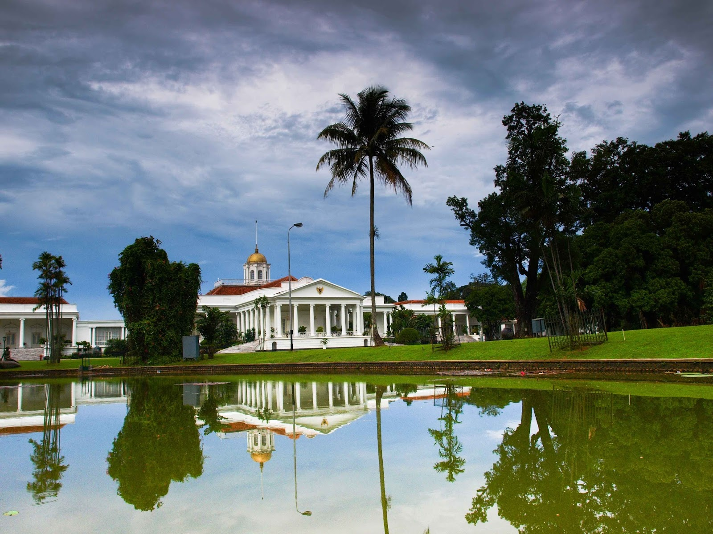
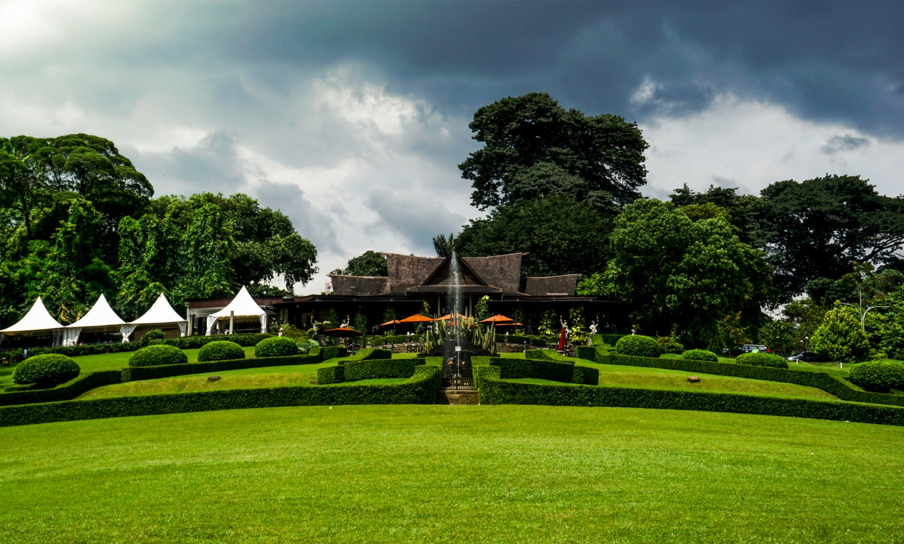
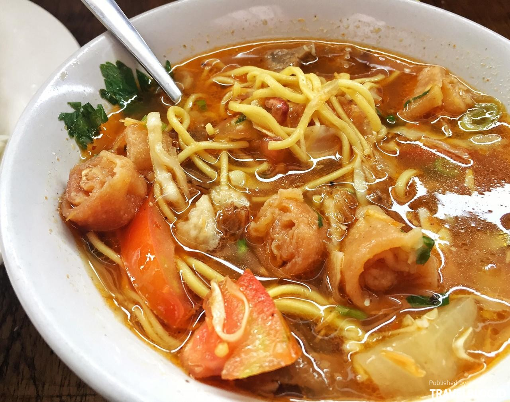
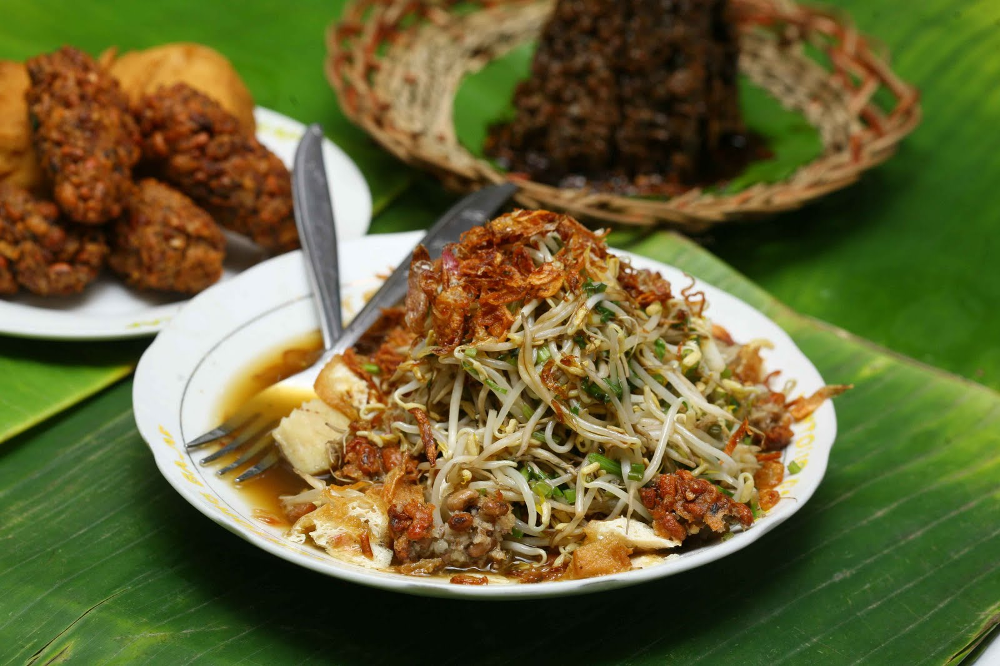
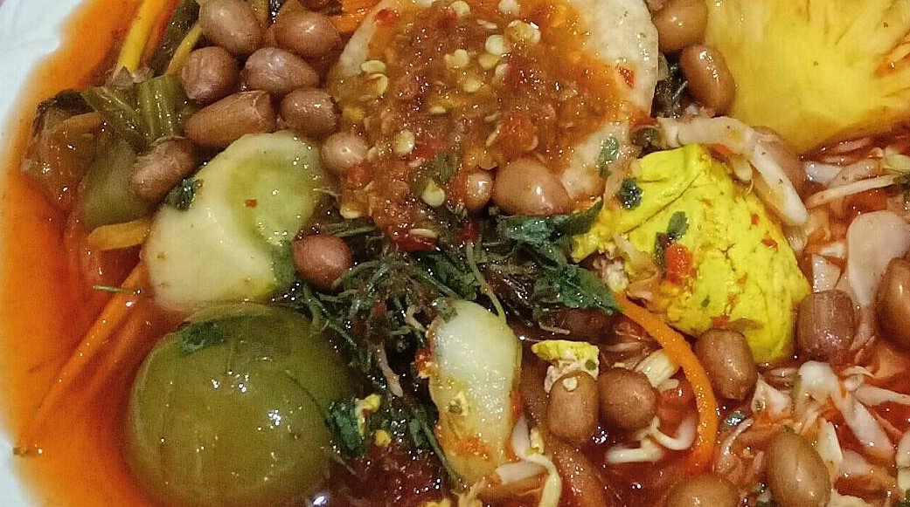
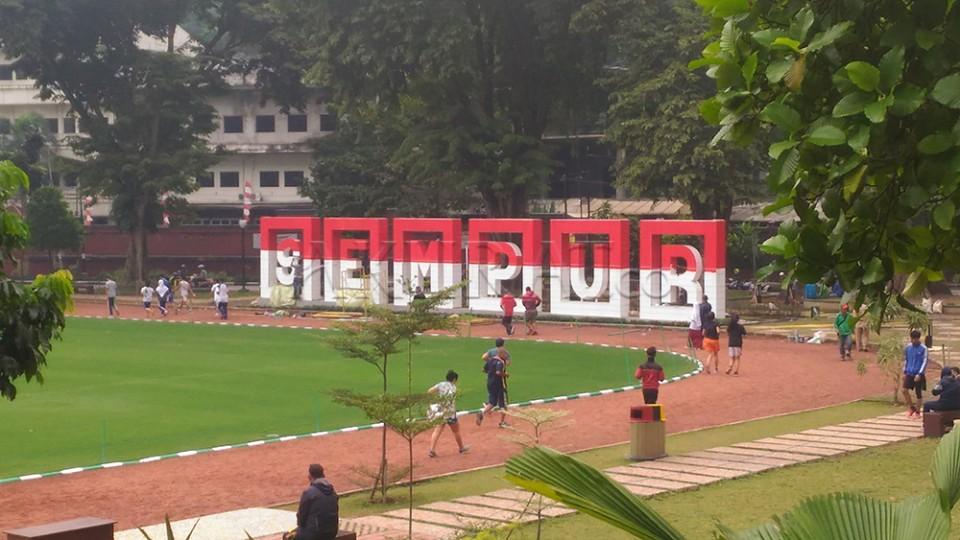
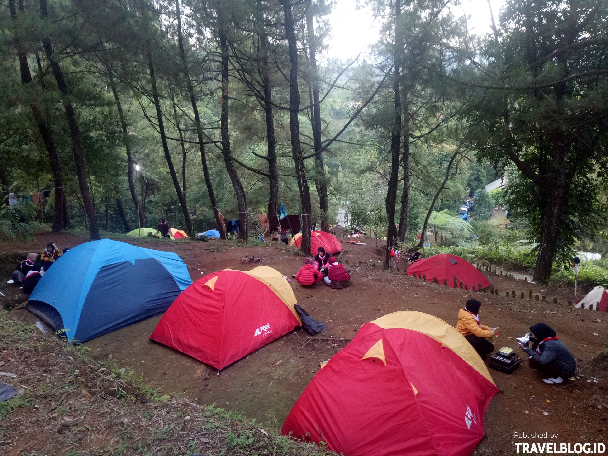

Deskripsi

Kota Bogor adalah sebuah kota di Provinsi Jawa Barat, Indonesia. Kota ini terletak
59 km sebelah selatan Jakarta, dan wilayahnya berada di tengah-tengah wilayah Kota Depok dan
Kabupaten Bogor. Dahulu luasnya 21,56 km², namun kini telah berkembang menjadi 118,50 km² dan jumlah
penduduknya 1.081.009 jiwa (2017). Bogor dikenal dengan julukan Kota Hujan, karena memiliki curah
hujan yang sangat tinggi. Kota Bogor terdiri atas 6 Kecamatan yang dibagi lagi atas sejumlah 68
Kelurahan. Pada masa Kolonial Belanda, Bogor dikenal dengan nama Buitenzorg (pengucapan:
boit'n-zôrkh", bœit'-) yang berarti "tanpa kecemasan" atau "aman tenteram".
Hari jadi Kabupaten Bogor dan Kota Bogor diperingati setiap tanggal 3 Juni, karena tanggal 3 Juni
1482 merupakan hari penobatan Prabu Siliwangi sebagai raja dari Kerajaan Pajajaran.
Bogor (berarti "enau") telah lama dikenal dijadikan pusat pendidikan dan penelitian pertanian
nasional. Di sinilah berbagai lembaga dan balai penelitian pertanian dan biologi berdiri sejak abad
ke-19. Salah satunya yaitu, Institut Pertanian Bogor, berdiri sejak awal abad ke-20.
Sejarah
Bogor itu berasal dari bahasa Arab, yaitu kata baghar atau baqar yang artinya sapi, pendapat ini
karena adanya patung sapi di dalam Kebun Raya Bogor. Baghar atau Baqar yang berubah jadi Bogor
karena adanya pengaruh Bahasa Arab di daerah Pekojan. Namun pendapat ini dianggap cukup lemah,
karena belum pernah ada bunyi BA dalam bahasa Arab berubah menjadi BO. Selain hal itu, lemahnya
pendapat ini didasarkan dari sudut pandang urutan waktu, di mana Kota Bogor sudah ada sebelum Kebun
Raya Bogor dibangun. Sedangkan Arca sapi itu sendiri berasal dari kolam kuno Kota Batu yag
dipindahkan ke dalam Kebun Raya oleh Dr. Freideriech pada pertengahan abad ke 19
Abad Kelima
Bogor ditilik dari sejarahnya adalah tempat berdirinya Kerajaan Hindu Tarumanagara di abad ke
lima. Beberapa kerajaan lainnya lalu memilih untuk bermukim di tempat yang sama dikarenakan
daerah pegunungannya yang secara alamiah membuat lokasi ini mudah untuk bertahan terhadap
ancaman serangan, dan di saat yang sama adalah daerah yang subur serta memiliki akses yang mudah
pada sentra-sentra perdagangan saat itu. Namun hingga kini, berdasarkan penelitian yang
dilakukan oleh beberapa arkeolog ternama seperti Prof. Uka Tjandrasasmita, keberadaan tempat dan
situs penting yang menyatakan eksistensi kerajaan tersebut.
Kebun Raya Bogor

Memiliki beberapa teleskop, antara lain, Refraktor Ganda Zeiss, Schmidt Bimasakti, Refraktor
Bamberg,
Cassegrain GOTO, dan Teleskop Surya. Refraktor Ganda Zeiss adalah jenis teleskop terbesar untuk
meneropong bintang. Benda ini diletakkan pada atap kubah sehingga saat teropong digunakan, atap
tersebut harus dibuka. Observatorium Bosscha boleh dikunjungi oleh siapapun, tanpa tiket. Namun,
bagi yang ingin menggunakan teleskop Zeiss, wajib mendaftarkan diri. Untuk instansi atau lembaga
pendidikan, diberikan jadwal hari Selasa sampai Jumat. Sementara itu, kunjungan individu dibuka
setiap hari Sabtu.
Masa Kemerdekaan
Pada tahun 1950, Buitenzorg menjadi Kota Besar Bogor yang dibentuk berdasarkan Undang-Undang
Republik Indonesia nomor 16 tahun 1950.
Pada tahun 1957, nama pemerintahan diubah menjadi Kota Praja Bogor, sesuai Undang-Undang nomor 1
tahun 1957.
Kota Praja Bogor berubah menjadi Kotamadya Daerah Tingkat II Bogor, dengan Undang-Undang nomor
18 tahun 1965 dan Undang-Undang nomor 5 tahun 1974.
Kotamadya Bogor berubah menjadi Kota Bogor pada tahun 1999 dengan berlakunya Undang-Undang nomor
22 tahun 1999.
Kuliner
Soto Bogor

Soto bogor merupakan campuran dari daging sapi, kikil, usus, urat, babat, risol, kentang atau
lobak rebus, mie kuning, tomat, serta kol, yang dipadu dengan kuah, lalu ditaburi dengan daun
bawang dan seledri, serta tambahan kerupuk emping. Berbeda dengan kuah soto pada umumnya yang
berkuah bening atau menggunakan santan, kuah soto bogor terlihat berwarna kemerahan yang timbul
dari campuran cabai merah dalam bumbunya. Rasanya semakin pedas jika disajikan dengan sambal
yang merupakan campuran cabai rawit dan cuka, serta jeruk nipis untuk menambah kesegaran
rasanya. Hidangan pedas dan gurih ini cocok untuk disantap sebagai pendamping nasi, baik saat
makan siang maupun makan malam.
Toge Goreng

Tauge goreng adalah makanan vegetarian, karena hidangan ini sama sekali tidak mengandung unsur
hewani. Bahan utamanya adalah tauge, atau kecambah kacang hijau. Biasanya kecambah kacang hijau
ini dimasak langsung di hadapan pembeli segera setelah pemesanan, menggunakan tungku yang
sederhana. Secara teknis, tauge ini tidaklah digoreng menggunakan minyak, melainkan ditumis
dengan air sedikit, atau lebih tepatnya direbus dengan sedikit air panas. Kemudian irisan
tahu, mi kuning, dan irisan ketupat atau lontong ditambahkan, ditumis dengan air dan dipanaskan
bersama-sama. Kemudian bahan-bahan yang sudah masak dan dipanaskan ini disirami kuah kental
bercitarasa asin-gurih yang terbuat dari oncom.
Asinan Bogor

Sebagai kuliner khas Indonesia yang nggak lekang waktu, asinan Bogor nggak pernah kehilangan
peminat. Asinan Bogor mampu menjamah lidah nggak cuma dewasa, tetapi juga remaja.
Dibungkus dalam plastik bening, asinan Bogor merupakan kudapan mirip acar yang diproses lewat
cara pengawetan. Terdiri dari tiga jenis, asinan buah, sayur dan campuran, asinan Bogor makin
lengkap dengan isian tempe/tahu goreng, kerupuk, hingga kacang goreng.
Meski diawetkan, asinan Bogor menggunakan bahan-bahan alami. Nggak ada biang gula maupun zat
pengawet berbahaya di dalam porsi asinan Bogor.
Sehingga, sensasi asam, manis dan pedas lewat kuahnya selalu siap membuat lidah dan tenggorokan
kamu segar kembali. Dengan harga yang cukup terjangkau, Rp 20-30 ribu per porsi, asinan Bogor
adalah rekomendasi jajanan paling oke nggak cuma buat oleh-oleh, tetapi juga disantap on the
spot.
Pariwisata
Kebun Raya Bogor
Sebuah kebun penelitian besar yang terletak di Kota Bogor, Indonesia. Luasnya mencapai 80 hektare
dan memiliki 15.000 jenis koleksi pohon dan tumbuhan. Saat ini Kebun Raya Bogor ramai dikunjungi
sebagai tempat wisata, terutama hari Sabtu dan Minggu. Di sekitar Kebun Raya Bogor tersebar
pusat-pusat keilmuan yaitu Herbarium Bogoriense, Museum Zoologi, dan IPB.
Taman Topi

Lapangan yang dahulu merupakan lahan kosong yang dipergunakan sebagai lapangan upacara untuk
memperingati HUT Republik Indonesia setiap tanggal 17 Agustus ini, sekarang sudah dikelola oleh
Dinas Pemakaman dan Pertamanan Kota Bogor. Lapangan ini sekarang dijadikan tempat olahraga dan
lapangan multifungsi. Di lapangan ini terdapat wall-climb, lapangan basket, lapangan utama untuk
bermain bola dan soft/baseball, run-track, lapangan voli beralaskan pasir pantai, serta area
untuk senam. Pada hari Minggu tempat ini akan menjadi pasar dadakan, banyak pedagang makanan
ataupun alat-alat yang menggelar dagangannya di sini setiap hari Minggu. Lapangan ini kerap
digunakan untuk berbagai pergelaran musik.
Gunung Bunder

Gunung Bunder adalah desa di kecamatan Pamijahan, Bogor, Jawa Barat, Indonesia. Kawasan Gunung
Bunder memiliki ketinggian antara 750-1.050 meter dari permukaan laut (dpl) dan sebagian besar
merupakan hutan produksi milik Perhutani yang ditanami dengan pohon pinus.
Di kawasan tersebut terdapat sebuah bumi perkemahan dengan fasilitas pelatihan luar ruang
(outbound training). Gunung Bunder terkenal juga dengan beberapa air terjun (curug) serta Kawah
Ratu.
Beberapa curug (air terjun) di Gunung Bunder diantaranya adalah Curug Cihurang, Curug Ngumpet,
Curug Cigamea, dan Curug Seribu. Semua curug tersebut terletak dekat dengan jalan raya sehingga
mudah dijangkau. Untuk menuju Kawah Ratu, pengunjung harus melakukan trekking sejauh 14
kilometer dari Bumi Perkemahan Gunung Bunder. Jika Anda ingin melakukan perjalanan ke sana,
kalau dari arah kota Bogor Baranang Siang lalu menuju IPB dan terus lurus, kemudian Anda belok
ke Cikampak atau dari arah Cibatok. Di sana Anda akan bertemu dengan Kecamatan Pamijahan, Bogor.
Anda bisa lewat Gunung Picung atau Gunung Bunder. Di Gunung Bunder Anda akan bertemu daerah
wisata yang sangat indah yaitu Bedeng, di sana terdapat banyak villa.
Gunung Gede

Gunung Gede merupakan sebuah gunung api bertipe
stratovolcano yang berada di Pulau Jawa, Indonesia. Gunung Gede berada dalam ruang lingkup Taman
Nasional Gede Pangrango, yang merupakan salah satu dari lima taman nasional yang pertama kali
diumumkan di Indonesia pada tahun 1980. Gunung ini berada di dua wilayah kabupaten yaitu
Kabupaten Cianjur dan Sukabumi, dengan ketinggian 1.000 - 2.958 m. dpl, dan berada pada lintang
106°51' - 107°02' BT dan 64°1' - 65°1 LS. Suhu rata-rata di puncak gunung Gede 18 °C dan di
malam hari suhu puncak berkisar 5 °C, dengan curah hujan rata-rata 3.600 mm/tahun. Gerbang utama
menuju gunung ini adalah dari Cibodas dan Cipanas.